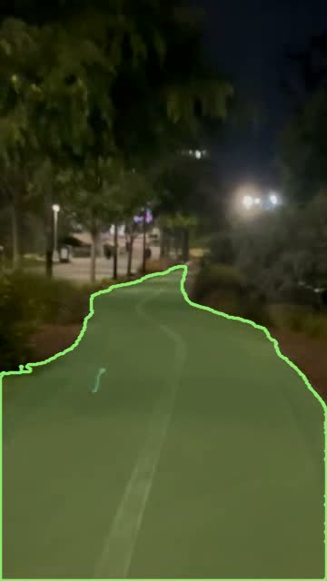

Hi, I'm Kenny Bell
I am a sophomore at UCSD persuing a B.S. in Electrical Engineering. I'm interested in physics, hardware design, and open-source software.

2026 · in progress
PPG Vitals Monitor
A finger-clip pulse sensor. A photodiode and transimpedance amplifier pick up blood-volume changes through the fingertip, and a Teensy 4.0 turns them into heart rate, with SpO2 and pulse-shape identification next.
Read the project →
Spring 2026 · IEEE team project
Hazard Detector
Real-time hazard detection for e-scooters. YOLOv8 spots potholes, curbs, people and cars, and a MobileSAM road segmentation I built makes sure it only beeps for things actually in the rider's path.
Read the project →